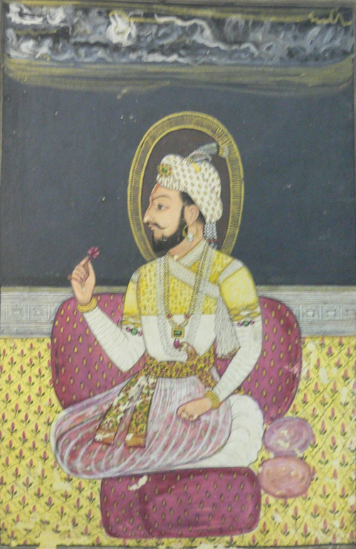
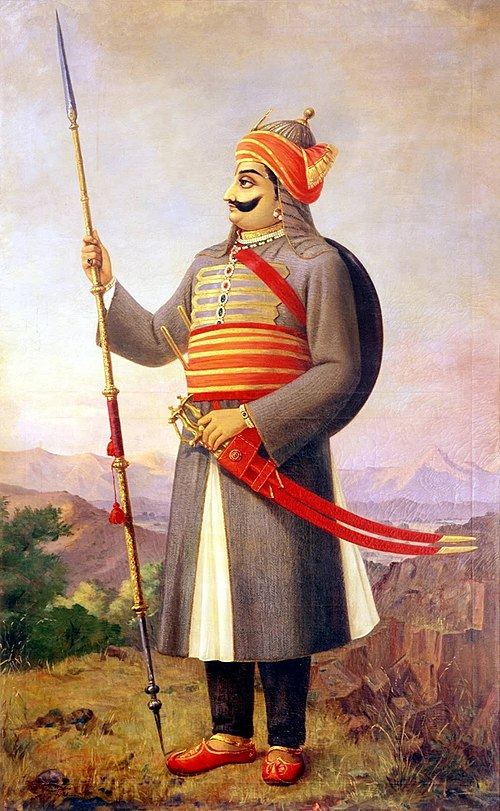
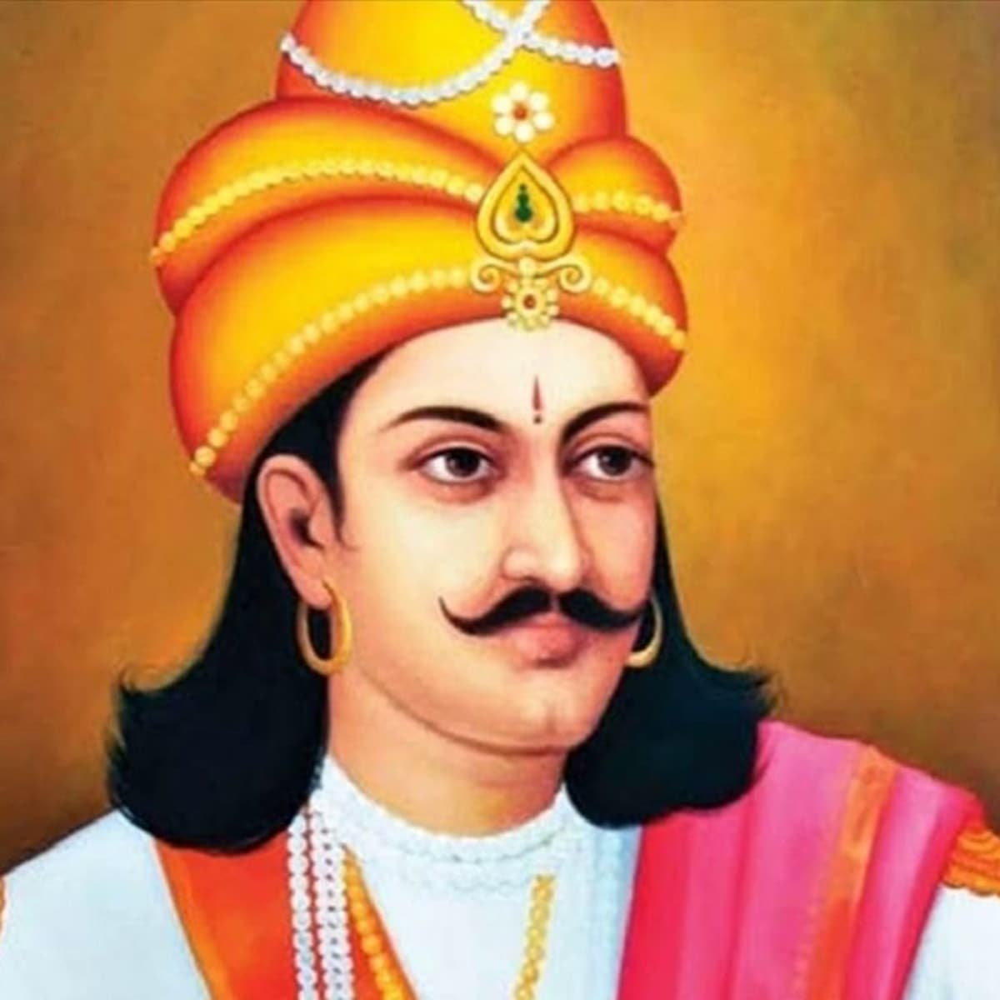
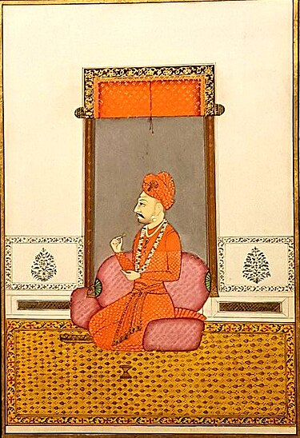
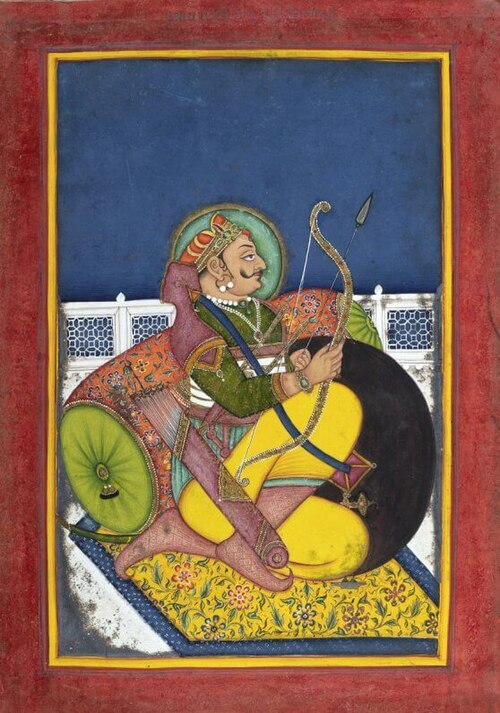
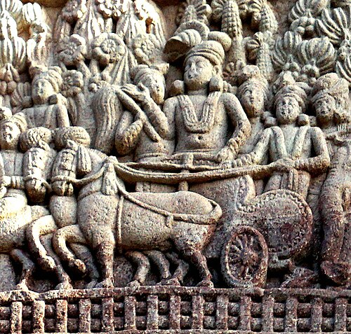
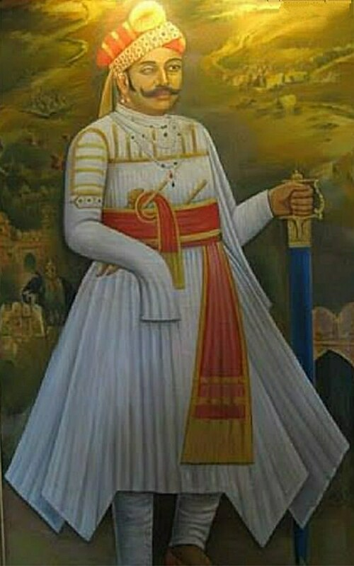

Chatrapati Shivaji Maharaj was an Indian ruler and a member of the Bhonsle dynasty.
And he is ruled from 1674 to 1780 as the first king of Maratha Empire.
Shivaji carved out his own independent kingdom from the Sultanate of Bijapur that formed
the genesis of the Maratha Empire.
Born: 19 February 1630, Shivneri Fort, Kusur
Died: 3 April 1680 (age 50 years), Raigad Fort
Spouse: Sakvarbai, Putalabai , Soyarabai, Sai Bhonsale
Children: Chhatrapati Sambhaji Maharaj, Rajaram
Parents: Shahaji, Jijabai
About
Chatrapati Shambhaji Maharaj,
ruled from 1681 to 1689 as the second king of the Maratha Empire,
a prominent state in early modern India. He was the eldest son of Shivaji, the founder of the Maratha Empire.
Born: 14 May 1657, Purandar Fort, Gherapurandharr
Died: 11 March 1689 (age 31 years), Tulapur
Spouse: Yesubai Bhonsale (m. 1666-1689)
Parents: Shivaji, Sai Bhonsale
Full name: Shambhaji Shivaji Bhonsale


About
Pratap Singh I, popularly known as Maharana Pratap,
was king of the Kingdom of Mewar, in north-western
India in the present-day state of Rajasthan, from 1572
until his death in 1597. He was king of the Kingdom of Mewar.
Born: 9 May 1540, Kumbhalgarh Fort
Died: 19 January 1597 (age 56 years), Chawand
Spouse: Maharani Ajbade Punwar (m. 1557-1597)e
Parents: Udai Singh II, Jaiwanta Bai
Full name: Maharana Pratap Singh Sisodia
About
Chandragupta Maurya was the founder and the first emperor of the Maurya Empire,
based in Magadha in the Indian subcontinent.He was the founder and the first emperor
of the Maurya Empire, based in Magadha (present-day Bihar) in the Indian subcontinent.
Born: Pataliputra
Died: Shravanbela Gola (Rural)
Spouse: Durdhara
Parents: Sarvarthasiddhi Maurya, Mura Maurya
Full name: Chandragupta Maurya


About
Bajirao I was the 7th Peshwa of the Maratha Empire.
He was appointed Peshwa at the age of nineteen by Shahu I,
following the death of his father, Balaji Vishwanath
He is credited with establishing the Marathas as the supreme power in the Indian subcontinent
Born: 18 August 1700, Dubere
Died: 28 April 1740 (age 39 years), Khargone
Spouse: Mastani, Kashibai
Parents: Balaji Vishwanath, Radhabai Barve
Full name: Bajirao Ballal Bhat
About
Prithviraja III, popularly known as Prithviraj Chauhan or Rai Pithora,
was a king from the Chauhan dynasty who ruled the territory of Sapadalaksha,
with his capital at Ajmer in present-day Rajasthan in north-western India.
Born: 1166, Gujarat
Died: February 1192 (age 26 years), Ajme
Spouse: Sanyogita (Samyukta)
Parents: Someshvara, Karpuradevi
Full name: Prithvirāja III


About
Ashoka, also known as Asoka or Aśoka, and popularly known as Ashoka the Great,
was Emperor of Magadha from c. 268 BCE until his death in 232 BCE, and the third ruler from the Mauryan dynasty
Born: Pataliputra
Died: 232 BC, Pataliputra
Spouse: Maharani Devi, Asandhimitra, Tishyaraksha
Parents: Bindusara, Subhadrangi
Full name: Devanampiya Piyadasi Ashoka
About
Sangram Singh I, most commonly known as Rana Sanga, was the Maharana of Mewar from 1509 to 1528.
A member of the Sisodia dynasty, he controlled parts of present-day Rajasthan, Gujarat,
Madhya Pradesh, Haryana, Sindh, and Uttar Pradesh with his capital at Chittorgarh
Born: 12 April 1482, Malwa
Died: 30 January 1528 (aged 45)Kalpi
Spouse: Rani Karnavati
Parents: Rana Raimal, Rani Ratan Jhali
Full name: Maharana Sangram Singh Sisodia

About
The Rani of Jhansi, also known as Rani Lakshmibai, was one of the leading
figures of the Indian Rebellion of 1857. The queen consort of the princely
state of Jhansi from 1843 to 1853, she assumed its leadership after the outbreak
of conflict and fought several battles against the British.